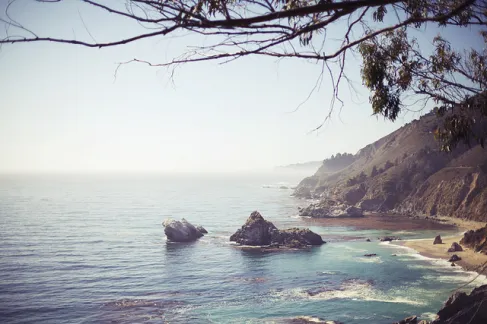

MTVM - Chương 19 (2)

Chương 19 (tiếp)
Tới khách sạn tôi thanh toán tiền cho người lái xe và cho anh ta một ít tiền típ. Chiếc xe phủ đầy bụi. Tôi phủi bụi khỏi hộp đựng cần câu. Mối liên hệ cuối cùng giữa tôi và Tây Ban Nha và fiesta. Người tài xế cho xe nổ máy và lái xuống phố. Tôi nhìn nó biến mất trên con đường rẽ vào Tây Ban Nha. Tôi bước vào khách sạn và họ chuẩn bị cho tôi một phòng. Vẫn căn phòng tôi thuê khi Bill và Cohn và tôi ở Bayonne dạo trước. Chuyện dường như đã xảy ra từ cách đây lâu lắm vậy. Tôi tắm rửa, thay một chiếc áo sơ mi mới, rồi ra phố.
Ở quầy bán báo tôi mua một tờ Herald New York và ngồi đọc nó trong quán café. Tôi thấy thật lạ khi trở lại nước Pháp. Một cảm giác yên ổn, và điền viên. Tôi ước gì được về Paris với Bill, trừ việc Paris đồng nghĩa với những gì còn hội hè hơn thế. Tôi đã quá đủ với lễ hội trong một khoảng thời gian rồi. San Sebastian sẽ yên tĩnh hơn hẳn. Mùa du lịch sẽ không bắt đầu cho tới tận tháng Tám. Tôi có thể kiếm được một phòng tốt và đọc và bơi. Biển ở đây cũng tuyệt. Còn có những hàng cây tuyệt vời chạy dọc theo con đường bên bờ biển, và rất nhiều trẻ con được gửi đến cùng với các cô bảo mẫu trước khi mùa du lịch bắt đầu. Vào buổi tối ban nhạc sẽ chơi bên dưới tán cây của quán Café Marinas. Tôi có thể ngồi ở quán Marinas và nghe nhạc.
“Có bàn ăn trong nhà dành cho một người không?” tôi hỏi người phục vụ. Bên trong quán café là một nhà hàng.
“Dạ. Có chứ ạ. Có bàn cho một người đấy ạ.”
“Tốt rồi.”
Tôi bước vào và gọi bữa tối. Một bữa thịnh soạn đối với nước Pháp nhưng nó thực sự quá khiêm nhường so với Tây Ban Nha. Tôi dùng kèm một chai rượu cho có bầu có bạn. Đó là một chai Château Margaux[1]. Thật dễ chịu khi uống từ từ và nhâm nhi hương vị của rượu và thưởng thức nó một mình. Một chai rượu có thể trở thành một người đồng hành không tồi. Rồi sau đó tôi gọi cà phê. Người bồi bàn giới thiệu thứ nước uống vùng Basque gọi là Izzarra. Anh ta mang cái chai lại và rót rượu vào đầy cái ly. Anh ta nói Izzarra được làm từ những bông hoa thuần khiết của vùng Pyrenees[2]. Những bông hoa đích thực của vùng Pyrenees. Nó trông giống như một thứ dầu dưỡng tóc và ngửi mùi như một thứ nước uống bị bỏ bùa của Ý. Tôi bảo anh ta rằng hãy mang những bông hoa của Pyrenees kia đi và mang tới cho tôi một vieux marc[3]. Rượu rất ngon. Tôi gọi thêm ly thứ hai sau khi gọi cà phê.
Người phục vụ dường như hơi tự ái vì những bông hoa Pyrenees, do vậy tôi típ cho anh ta nhiều hơn so với dự định. Chuyện ấy làm cho anh ta hạnh phúc hẳn. Thật là thoải mái khi ở trong một đất nước mà việc làm cho người khác hạnh phúc lại quá đỗi giản đơn. Anh chẳng thể nào biết được liệu một anh bồi người Tây Ban Nha có biết ơn anh hay không. Còn nước Pháp lại có một nền tảng tài chính rành mạch và hết sức rõ ràng. Đó là quốc gia đơn giản nhất để sinh sống. Không một ai khiến cho sự việc trở nên rối rắm bằng việc trở thành bạn anh vì một lý do khó hiểu. Nếu anh muốn người ta yêu mến anh thì anh chỉ việc chi ra một chút tiền. Tôi chi ra một ít tiền và anh bồi kia có ngay hảo cảm với tôi. Anh ta trân trọng cái phẩm chất biết tôn trọng giá trị nơi tôi. Anh ta sẽ rất vui khi thấy tôi quay lại. Tôi sẽ còn tiếp tục ăn ở đây đôi ba lần nữa và anh ta sẽ lấy làm vui khi được gặp lại tôi, và sẽ mong được phục vụ tôi tận tình thêm nhiều lần nữa. Đó là một sự yêu thích rất đỗi chân thành bởi vì nó dựa trên một nền tảng có ý nghĩa. Tôi đã quay về với nước Pháp.
Sáng ngày hôm sau tôi bao hậu hĩnh cho tất cả mọi người trong khách sạn để kết thân với nhiều người hơn, và đáp chuyến tàu buổi sáng tới San Sebastian. Ở nhà ga tôi không boa cho người xách hành lý nhiều như đáng lẽ ra tôi nên làm bởi tôi nghĩ rằng sẽ chẳng bao giờ gặp lại ông ta nữa. Tôi chỉ muốn có một vài người bạn Pháp tốt bụng ở Bayonne để tôi được chào đón trong trường hợp sẽ quay trở lại trong tương lai. Tôi biết nếu họ nhớ tới tôi thì tình bạn của họ sẽ rất trung thành.
Ở Irun tôi phải đổi tàu và xuất trình hộ chiếu. Tôi ghét việc phải rời nước Pháp. Cuộc sống ở Pháp thật là đơn giản. Tôi thấy mình như một gã ngốc khi trở lại Tây Ban Nha. Ở Tây Ban Nha, anh chẳng nói trước được điều gì. Tôi thấy mình đúng là một gã ngốc khi quay trở lại, nhưng tôi đứng xếp hàng với cuốn hộ chiếu cầm trong tay, mở túi cho hải quan kiểm tra, mua vé, đi qua cổng, trèo lên tàu, và sau bốn mươi phút và tám cái đường hầm tôi có mặt ở San Sebastian.
Ngay cả trong một ngày nóng nực San Sebastian vẫn có cái phẩm chất của một buổi sáng sớm. Những cái cây cứ như chưa từng rụng lá. Đường phố mang lại cảm giác như vừa mới được tưới nước. Trong những ngày oi bức nhất trên phố vẫn luôn râm mát. Tôi nghỉ lại trong môt khách sạn ở trung tâm mà tôi đã từng tới trước đây, và họ cho tôi một phòng với ban công mở ra phía trên mái ngói của các ngôi nhà trong thị trấn. Những triền núi xanh mướt hiện ra phía sau những mái nhà.
Tôi dỡ đồ đạc và đặt chồng sách lên chiếc tủ đầu giường, mang bộ dao cạo râu vào phòng tắm, treo vài bộ quần áo vào cái tủ lớn, và đưa cả một đống đồ đi giặt. Rồi tôi tắm vòi sen trong phòng tắm và xuống nhà dùng bữa trưa. Tây Ban Nha không thay đổi giờ theo mùa, do đó tôi xuống nhà hơi sớm so với giờ dùng bữa. Tôi chỉnh lại giờ trên đồng hồ đeo tay. Tôi có lại một giờ khi tới San Sebastian.
Khi tôi đi vào phòng ăn người gác cửa đưa cho tôi một bản khai tạm trú. Tôi ký tên vào và hỏi xin anh ta hai mẫu đơn điện tín, và viết lời nhắn gửi tới Hotel Montoya, yêu cầu họ gửi thẳng tất cả thư từ và điện tín cho tôi tới địa chỉ này. Tôi tính toán số ngày tôi sẽ ở lại San Sebastian và rồi viết một bức điện tới văn phòng yêu cầu họ giữ lại thư, nhưng chuyển toàn bộ điện tín cho tôi tới San Sebastian trong vòng sáu ngày. Rồi tôi đi vào và dùng bữa trưa.
Sau bữa trưa tôi lên phòng, đọc một lúc, rồi ngủ. Khi thức dậy đã là bốn giờ rưỡi. Tôi tìm đồ bơi, bọc nó với một cái lược bằng một cái khăn tắm, rồi đi xuống nhà và đi bộ lên phố Concha. Thủy triều vừa rút. Bờ cát mịn và chắc, và cát có màu vàng. Tôi đi vào phòng thay đồ, cởi quần áo, mặc vào chiếc quần bơi, và bước trên mặt cát mịn tới mép nước. Cát ấm áp dưới lòng bàn chân. Chỉ có vài người dưới nước hay trên bờ. Phía xa kia các mui đất Concha gần như giáp nhau thành một bến cảng, ở đó những con sóng bạc đầu dập dồn và biển mở ra. Dù cho nước triều đã rút, vẫn còn vài đợt sóng chậm đang cuộn lại. Chúng tiến vào bờ như những gợn sóng dưới nước, được tập hợp lại bởi sức mạnh của nước, rồi vỡ ra nhẹ nhàng trên nền cát ấm. Tôi đặt chân xuống nước. Nước lạnh. Khi một con sóng nổi lên tôi lặn xuống, bơi ra ngoài khơi dưới làn nước, và nổi lên mặt nước và mất đi cảm giác lạnh. Tôi bơi ra cái bè, nâng người lên, và nằm trên tấm ván mỏng. Một thằng con trai và một đứa con gái nằm ở đầu bên kia của cái bè. Đứa con gái tháo dây áo bơi ra và phơi cái lưng trần dưới nắng. Thằng con trai úp mặt xuống cái bè và nói chuyện với đứa con gái. Đứa con gái cười khúc khích với mấy lời thằng bé nói, và quay cái lưng rám rắng của mình về phía mặt trời. Tôi nằm trên cái bè dưới ánh nắng cho tới khi khô người. Rồi tôi lặn thêm nhiều lần nữa. Tôi lặn sâu một lần, bơi xuống tận đáy. Tôi bơi mở mắt và nước có màu xanh và tối. Cái bè tạo ra một mảng tối. Tôi nổi khỏi mặt nước bên cạnh cái bè, nâng người lên, lặn thêm một lần nữa, nhịn thở một lúc lâu, rồi bơi vào bờ. Tôi nằm trên bờ cát cho tới khi khô người, rồi đi vào phòng thay đồ, cởi đồ bơi, tráng người bằng nước sạch, rồi lau khô.
Tôi đi dưới những hàng cây quanh bến cảng tới sòng bạc, và đi dọc những con phố mát rượi lên quán Café Marinas. Có một ban nhạc đang chơi bên trong quán café và tôi ngồi bên ngoài hiên và tận hưởng hương vị tươi mới mát mẻ của một ngày nắng, và gọi một cốc nước chanh đá và rồi tiếp đó là một ly wishkey pha với soda. Tôi ngồi trước hiên quán Marinas một lúc lâu và đọc và ngắm nhìn mọi người, và lắng nghe tiếng nhạc.
Rồi khi trời chuyển tối, tôi đi dạo dọc bến cảng, rồi cuối cùng quay trở lại dùng bữa tối. Có một cuộc đua xe đạp đang diễn ra, gọi là Tour du Pay Basque, và các tay đua nghỉ đêm tại San Sebastian. Trong phòng ăn, ở một bên, các tay đua ngồi bên một dãy bàn dài, dùng bữa cùng huấn luyện viên và nhà quản lý của họ. Bọn họ đều là người Pháp và Bỉ, và rất tập trung vào bữa ăn, nhưng họ cũng có cả một buổi tối thật thoải mái. Ngồi đầu bàn là hai cô nàng người Pháp xinh xắn, giống kiểu mấy nàng ở Rue du Faubourg Montmartre[4]. Tôi không đoán ra được họ thuộc về ai. Tất cả bọn họ đều nói chuyện tục tĩu và có nhiều những câu đùa cợt riêng tư và những câu nói đùa ở bên kia bàn không hề được nhăc lại khi mấy cô gái đòi nghe. Sáng hôm sau vào lúc năm giờ cuộc đua sẽ được tiếp tục vòng cuối, chặng đường San Sebastian – Bilbao. Mấy tay đua uống nhiều rượu, và da họ cháy nắng và nâu bóng bởi mặt trời. Họ không nghiêm túc coi trọng cuộc đua lắm ngoại trừ là giữa bọn họ với nhau. Họ thi đấu với nhau quá thường xuyên đến nỗi dù ai thắng thì cũng chẳng khác biệt gì cho lắm. Đặc biệt là khi cuộc thi được tổ chức ở một quốc gia khác. Tiền bạc đều đã được giải quyết thỏa đáng cả rồi.
Người đàn ông đã có hai phút dẫn đầu cuộc đua bị tấn công bởi mụn nhọt, mà theo lời anh ta thì rất đau. Anh ta ngồi tựa lưng vào một chiếc ghế nhỏ tí. Cổ anh ta rất đỏ và mái tóc vàng thì cháy nắng. Những tay đua khác chọc ghẹo anh ta về vụ nhọt đinh. Anh ta gõ bàn bằng cái nĩa.
“Nghe này.” anh ta tuyên bố, “ngày mai mũi tôi sẽ dính chặt vào ghi đông do đó thứ duy nhất có thể động vào cái nhọt này là làn gió mơn man.”
Một trong mấy cô gái nhìn anh ta từ phía cuối bàn, anh ta cười tươi rồi đỏ bừng cả mặt. Những người Tây Ban Nha, họ nói, không biết cách đạp pê đan.
Tôi dùng cà phê trên sân thượng với người quản lý đội của một trong những nhà máy sản xuất xe đạp lớn. Ông ta nói đây là một cuộc đua rất thoải mái, và đáng để theo dõi nếu đội Bottechia[5] không từ bỏ cuộc đua ở Pamplona. Bụi bặm là thứ rất tệ, nhưng ở Tây Ban Nha đường xá tốt hơn nhiều so với ở Pháp. Đua xe đạp đường trường là môn thể thao duy nhất trên thế giới, ông ta nói. Liệu tôi đã bao giờ theo dõi Tour de France[6] chưa? Chỉ qua báo chí thôi. Tour de France là sự kiện thể thao vĩ đại nhất trên thế giới. Đi theo và điều hành các đường đua giúp ông ta hiểu về nước Pháp. Có rất ít người hiểu được nước Pháp. Cả mùa xuân và mùa hè và cả mùa thu đều được ông ta dành cho các cung đường cùng với các tay đua. Cứ nhìn vào số xe ô tô đi theo đoàn vận động viên từ thành phố này tới thành phố khác trong một cuộc đua thì biết. Đây quả là một đất nước giàu có và ngày càng có tinh thần thể thao hơn mỗi năm. Có thể còn là đất nước yêu thể thao nhất hành tinh này ấy chứ. Làm được điều này là do đua xe đạp đường trường mang lại. Môn này và cả môn bóng đá nữa. Ông ta biết rõ nước Pháp mà. Một nước Pháp yêu thể thao. Ông ta biết rõ các cuộc đua đường trường. Chúng tôi uống cognac. Sau cùng, dù vậy, quay trở lại Paris thì cũng không lấy gì làm tệ. Chỉ có duy nhất một Paname[7] thôi mà. Trên cả thế giới này, là vậy đấy. Paris là thành phố có tinh thần thể thao nhất trên thế giới. Tôi có biết Chope de Negre[8] không? Tôi không biết. Tôi sẽ tới đó tìm ông ta. Chắc chắn là vậy. Chúng tôi sẽ còn uống cùng nhau. Chắc chắn là vậy. Họ khởi hành lúc sáu giờ kém mười lăm vào buổi sáng. Tôi có tham gia không? Tôi sẽ cố. Tôi có muốn ông ta gọi tôi dậy không? Được thế thì tốt quá. Tôi sẽ yêu cầu khách sạn báo thức. Ông ta sẽ không cần phải gọi tôi dậy. Tôi không thể làm phiền ông được. Tôi sẽ nhờ lễ tân việc ấy. Chúng tôi chào tạm biệt nhau về phòng và hẹn gặp lại vào sáng ngày hôm sau.
Khi tôi thức dậy vào buổi sáng thì các vận động viên xe đạp và những ô tô tháp tùng đã ở trên đường đua được ba giờ đồng hồ. Tôi dùng cà phê và đọc báo trên giường rồi mặc quần áo và mang đồ bơi ra biển. Mọi thứ đều tinh khiết và mát mẻ và ẩm ướt vào sáng sớm. Mấy cô bảo mẫu trong những bộ đồng phục hoặc trang phục nhà nông đi dưới hàng cây cùng bọn trẻ. Những đứa trẻ người Tây Ban Nha trông thật xinh đẹp. Vài người đánh giày ngồi bên nhau dưới một tán cây và nói chuyện với một anh lính. Anh lính chỉ còn mỗi một cánh tay. Nước triều lên và gió thổi mát lộng và mặt biển nổi sóng.
Tôi thay đồ trong phòng thay đồ, đi qua con đường hẹp trên bãi biển, và xuống nước. Tôi bơi ra phía ngoài xa, cố gắng bơi qua những đợt sóng cuồn cuộn, nhưng thỉnh thoảng vẫn phải lặn xuống. Rồi trong làn nước tĩnh lặng tôi quay người và nổi trên mặt nước. Trôi lềnh bềnh trên mặt nước tôi chỉ nhìn thấy được bầu trời, và những con sóng cồn nhô lên rồi vỡ ra phía bên trái. Tôi bơi trở lại chỗ con sóng và lao xuống, chúi mặt xuống, một con sóng lớn, rồi xoay người lại và bơi, cố gắng giữ khoảng cách và không để cho con sóng đập vào người. Tôi mệt lử cả người, khi phải bơi vượt những con sóng, và tôi quay lại rồi bơi tới chỗ chiếc bè. Nước biển xao động và lạnh lẽo. Tôi có cảm giác như tôi không thể nào chìm được. Tôi bơi thật chậm, cứ như là bơi một chặng dài với những con sóng cao vút, và rồi tôi bật người ngồi lên chiếc bè, nước trên người tôi nhỏ giọt, và mặt bè nóng rẫy lên dưới ánh mặt trời. Tôi ngước nhìn quanh vịnh, thị trấn cổ xưa, sòng bài, những hàng cây dọc con đường đi dạo, và cái khách sạn lớn với cái cổng vòm màu trắng và tên của nó được khắc chữ vàng. Bên tay phải, bến cảng gần như đã đóng cửa, là một ngọn đồi xanh với đàn gia súc. Chiếc bè lắc lư theo nhịp chuyển động của nước. Phía bên kia của một không gian hẹp mở ra biển khơi là một mui đất cao khác. Trong phút chốc tôi muốn bơi qua phía bên kia của vịnh nhưng lại sợ mình sẽ bị chuột rút.
Tôi ngồi dưới nắng và nhìn những người tắm biển trên bờ. Trông họ thật nhỏ bé. Một lúc sau tôi đứng dậy, ấn chặt ngón chân cái vào mép chiếc bè khi nó chìm xuống bởi trọng lượng của cơ thể tôi, và lặn xuống thật sâu và quả quyết, để vượt sang vùng nước sáng hơn, hất đám nước biển mặn chát khỏi đầu tóc, và bơi chậm nhưng quả quyết vào bờ.
Sau khi mặc quần áo sạch vào và thanh toán tiền thuê phòng thay đồ, tôi đi về khách sạn. Mấy tay đua xe đạp bỏ lại rất nhiều báo L’Auto, tôi gom chúng lại trong phòng đọc và mang ra ngoài rồi ngồi xuống một cái ghế êm ái được kê dưới nắng và đọc và cập nhật đời sống thể thao của nước Pháp. Trong lúc ngồi đó người gác cổng tiến tới chỗ tôi với một cái phong bì màu xanh ở trong tay.
“Ông có điện ạ.”
Tôi móc ngón tay vào dưới miệng phong bì và mở ra đọc. Nó được gửi đi từ Paris:
ANH CÓ THỂ TỚI KHÁCH SẠN HOTEL MONTANA MADRID KHÔNG EM ĐANG GẶP KHÓ
BRETT.
Tôi típ cho người gác cổng và đọc lại lời nhắn. Một người đưa thư đang bước tới từ bên lề đường. Ông ta rẽ vào khách sạn. Ông ta có bộ râu rập rạp và mang phong cách quân nhân. Ông ta lại bước ra khỏi khách sạn. Người gác cổng đi ngay sau ông ta.
“Ông còn một bức điện nữa ạ.”
“Cảm ơn anh,” tôi nói.
Tôi mở ra. Nó được gửi từ Pamplona.
ANH CÓ THỂ TỚI KHÁCH SẠN HOTEL MONTANA MADRID KHÔNG EM ĐANG GẶP KHÓ
BRETT.
Người gác cổng đứng đó đợi thêm tiền típ, có thể là vậy.
“Tàu đi Madrid khởi hành lúc mấy giờ?”
“Nó đã đi vào chín giờ sáng. Có chuyến tàu chậm lúc mười một giờ, và tàu tốc hành vào mười giờ tối nay.”
“Lấy cho tôi một vé nằm của tàu Sud Express nhé. Anh có cần tiền ngay không?”
“Sẽ như ý ông ạ,” anh ta nói. “Tôi sẽ ghi nó vào hóa đơn ông nhé.”
“Anh cứ làm như vậy nhé.”
Ồ, thế có nghĩa là San Sebastian sẽ phải vứt qua một bên. Tôi cho là, phỏng chừng, tôi cũng đã kỳ vọng vào một điều tương tự như thế. Tôi thấy người gác cửa đứng ở cửa ra vào.
“Anh làm ơn mang tới cho tôi một tờ mẫu điện tín nhé.”
Anh ta mang đến và tôi lấy bút máy của mình ra và viết:
PHU NHÂN ASHLEY KHÁCH SẠN MONTONA MADRID
ĐÁP TÀU SUD EXPRESS VÀ CÓ MẶT VÀO NGÀY MAI
YÊU EM JAKE.
Như vậy có vẻ sẽ giải quyết được chuyện này. Là vậy đấy. Cho một cô nàng đi với một gã đàn ông. Giới thiệu cô ta với gã khác và cô ta biến đi cùng với hắn. Giờ thì lại phải đi mà tha cô ta về. Và ký chữ yêu em lên tờ điện tín. Chuyện như thế thì cũng được thôi. Tôi đi ăn trưa.
[1] Château Margaux: một loại rượu của Pháp
[2] Pyrenees: một rặng núi nằm dọc biên giới Pháp – Tây Ban Nha
[3] Tiếng Pháp trong nguyên bản: rượu uống sau bữa tối
[4] Rue du Faubourg Montmartre: khu phố thời trang sành điệu của Paris
[5] Bottechia: tên một hãng sản xuất xe đạp có trụ sở tại Cavarzere, Italy
[6] Tour de France: (tiếng Pháp) còn gọi là Grande Bocle hay một cách đơn giản là Le Tour – là giải đua xe đạp nổi tiếng nhất trên thế giới. Từ năm 1903, ngoại trừ trong thời gian Thế chiến I (không tiến hành từ năm 1915 đến năm 1918) và Thế chiến II (không tiến hành từ năm 1940 đến năm 1946), cuộc đua này được tổ chức hàng năm trong vòng ba tuần của tháng 7 với tuyến đường đua xuyên nước Pháp và các nước lân cận.
[7] Paname: tên gọi thân mật của Paris từ đầu thế kỷ 20 khi những chiếc mũ panama trở nên phổ biến. Được khởi xướng từ các công nhân đào con kênh Panama, loại mũ này rất thịnh hành ở Mỹ và châu Âu. Rồi đến Paris, tất cả đàn ông đều đội chiếc mũ panama và nó trở thành một tên gọi của thành phố.
[8] Chope de Negre: tên một quán café ở Paris
Comments